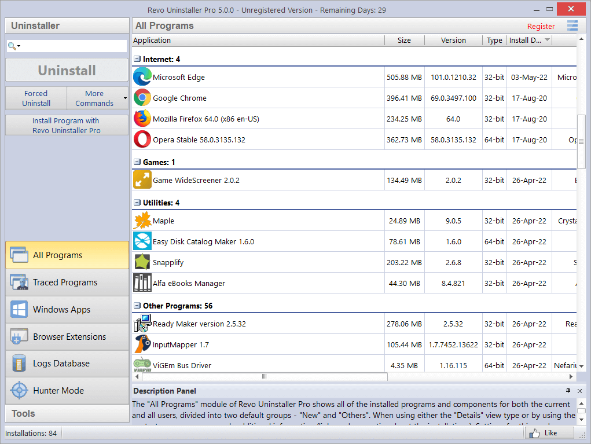

Revo Uninstaller 到底值不值得掏钱？一份算账清单
免费版给了什么、Pro 版多了什么、轻度用还是主力用、替代方案有没有——把 Revo Uninstaller 的付费决策拆成三秒能对号入座的四笔账。
先把定价拆了
Revo Uninstaller 的付费版叫 Pro，它的官网上列了两种拿法：年订阅大约 25 美元，买断终身大约 50 美元。先别急着嫌贵或者嫌便宜——先把免费版和 Pro 版到底差在哪掰清楚。
免费版从Revo Uninstaller下载就能拿到，基础卸载流程、Safe/Moderate/Advanced 三档扫描、注册表残留识别、文件残留清理。对，就是那个粗体高亮的注册表窗口、勾父节点自动勾子节点、红色排除列表、自动备份这些——全在免费版里。甚至卸载前建系统还原点这个安全网，免费版也有。
那 Pro 版多了什么？四个核心功能：追踪安装、强制卸载（Forced Uninstall）、History Cleaner 痕迹清理、Autorun Manager 启动项管理。还有一些小项比如批量卸载、导出卸载日志、备份管理器界面，以及技术支持。
看起来免费版已经能"干净卸载"了——那 Pro 到底在解决什么免费版解决不了的事？

分三种人算账
别听别人说"必买"或者"完全没必要"——你属于哪种人，自己对号入座。
轻度用户：半年卸一次软件
典型场景：偶尔装个试用版软件，用完卸掉，或者系统里常年只有那么几个主力软件，基本不动。
这种情况免费版够用。Revo 免费版的三档扫描算法已经能覆盖大部分常规软件的残留——你卸完之后扫一遍注册表和文件，粗体项勾上删了，完事。系统还原点也帮你兜底，真删错了能拉回来。
那免费版的成本是什么？每卸一次软件大约多花 3~5 分钟——扫描等待 + 人工甄别残留项。半年卸一次的话，这点时间摊下来可以忽略。而且你根本没机会遇到免费版的核心短板：没追踪日志的软件，扫描算法只能"猜"它留了什么，猜对率大概 90%。剩下那 10% 的残留，轻度用户几年可能都碰不上一次。
结论：轻度用户——别买，浪费钱。
主力用户：每个月卸三五个
典型场景：喜欢折腾软件、经常装新东西试用、测试完卸掉再换一个。或者你是开发者、设计师，手里工具链换得勤。
到这个量级，免费版的效率瓶颈开始疼了。
第一个痛点是强制卸载。有些软件内置卸载器故意留尾巴——或者干脆卸载器就坏了。免费版只能走"正常卸载 → 扫描残留"这条线，内置卸载器跑不动你就卡壳。Pro 的 Forced Uninstall 直接跳过内置卸载器，用扫描算法硬拆。主力用户碰过几次"卸不干净越删越乱"的情况之后，会觉得这个功能值回票价。
第二个痛点是每一次卸载的精度。免费版没有追踪日志，每次卸载都是"猜"。猜的结果是——大部分时候能清干净，但总有那么几个软件，注册表树深处藏着一两个 GUID、或者 AppData 里留了个空目录你漏删了。单个残留不大，但半年下来积累的垃圾够你跑一次磁盘清理。Revo Uninstaller文档里对追踪机制有详细说明——Pro 版的追踪安装是"安装时全程录屏"，它记录安装器每写了哪个注册表键、拷贝了哪个文件到哪个目录。卸载时直接按日志清单删，精度 100%，没有猜的成分。
第三个痛点是批量卸载。换电脑、重装系统前、或者年终大扫除——你想一次性卸十来个软件，免费版只能一个个手动跑，每个等扫描等甄别。Pro 版可以全选批量走，中间只在每个软件卸载前建一个还原点，不用每个都等。
算时间账：主力用户每月卸载 5 个软件，每个用免费版多花 3 分钟甄别 + 平均 1 分钟因为漏删而回头修 = 每月多花 20 分钟。一年 4 小时。Pro 年订阅 25 美元换这 4 小时 + 100% 精度 + 不会被"卸不掉"卡住——时间值钱的话，这笔账是正的。
但如果你时间不值钱（比如学生党），继续用免费版也行，就是麻烦点，不会坏。

重度用户：天天卸软件
典型场景：软件评测博主、IT 运维、或者那种真的一天装三五个软件试手感的人。
这种不用算了——直接买 Pro，甚至买断。
重度用户最在意的是两件事：零残留 + 不被软件反卸载。 免费版的扫描猜算法在重度场景下会累——你卸完一个软件，总是忍不住再开 regedit 去手动搜一遍残留，不放心。Pro 的追踪日志给你确定性：我知道装的时候它动了哪，卸的时候就删哪。
而且重度用户一定会用到 History Cleaner——每次卸完软件顺手清一遍浏览器历史、运行记录、剪贴板，比你分别打开 Chrome、Edge、Win+R 去清要快得多。Autorun Manager 管理启动项也是重度刚需——装多了软件总有几个偷偷加启动项，Revo 的启动项面板比 MSConfig 好用太多。
Pro 的批量卸载在重度场景下省的不是几小时，是半天以上——想象一下要卸 30 个软件，免费版跑下来的时间 Pro 能跑三遍。
买断 50 美元，用两年就是一年 25，用三年就是一年 16。越重度，买断越划算。
不付钱的替代方案
如果你看完上面还是不想掏这笔钱，确实有别的路：
第一条路：坚持免费版，接受每次多花几分钟。 这其实就是主力用户里"时间不值钱派"的选择。卸载前先开任务管理器盯着点，卸完扫一遍粗体项，再手动去 AppData\Roaming 和 AppData\Local 里看一眼有没有残留文件夹。多花点时间但零成本。
第二条路：换同类免费工具。 Geek Uninstaller、Bulk Crap Uninstaller、IObit Uninstaller 都有免费版。Geek Uninstaller 的强制卸载做得不错，IObit 有类似追踪安装的功能但免费版只有基础扫描。不过这些工具也都只有免费版打基础、Pro 版卖追踪卸载的套路——跳来跳去可能还是会回到同一个问题。
第三条路：降低使用频率。 少装少卸就不用管残留。这条对轻度用户成立，对主力和重度用户等于让他们换一种工作方式，代价反而更高。
最后给个可执行的结论
别纠结，三秒对号入座：
- 半年卸一次软件的——关掉这个页面，继续用免费版。
- 每个月卸三五个、时间又值钱的——订阅 Pro 年付，25 美元省心一整年。
- 天天卸软件或者做评测的——买断 Pro，50 美元用三年就是血赚。
- 主力用户但学生党时间不值钱的——继续免费版，大不了每次卸完多开 regedit 手动搜一遍。
Revo 的定价不坑，免费版给得也够实在。Pro 卖的从来不是"卸载功能本身"——而是效率、确定性和省事。值不值这笔账，全看你每月在软件装卸上花多少时间。
资料维护这块我放到三个仓库了，GitHub 主仓库、国内 Gitee 镜像、GitCode 也留了一份备份，访问速度各取所需就行。